Download the Starter Project
Layout uses one Master Starter Project. If you’ve downloaded it recently, chances are you don’t need to re-download it.
This tutorial requires that you’ve downloaded the starter project as of 4/13/16:
- Click here to download the Layout Master starter project.
- Extract the zip folder.
- Open up the Layout_ToyBoxx.uproject and begin your adventure!
This lesson covers the basics of materials. By the end, you’ll know:
Let’s get started!
Materials are how UE4 programmers and artists make things look great. They can get complex quickly, but it’s important to know the basics:
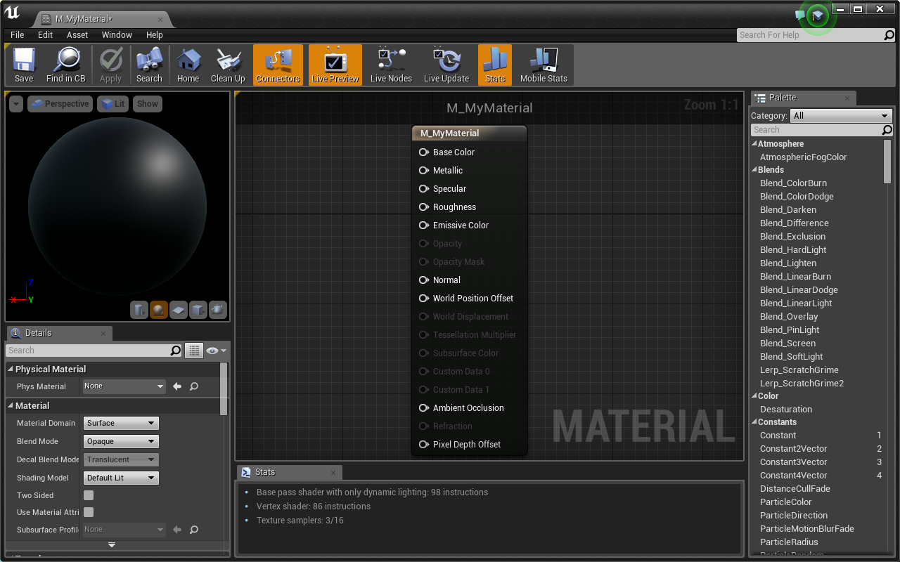
Welcome to the Material Editor!
There are many options and new nodes to play with in here. If you are familiar with programming shaders, you’ll be right at home once you get comfortable using UE4’s visual nodes.
We’re going to start by creating a simple, solid color material.
This lesson assumes you understand how color is represented in computers using RGB values. If this idea is new to you, this Wikipedia article goes into depth about the RGB Color Model
A 3Vector is often used to represent color, each number corresponding to the Red, Green, and Blue channels.
You can see that the preview in the upper left has updated. That’s what your material will look like on a mesh in your game.
Woot! You just made your first material. Let’s step it up a notch and learn how to use textures in our material.
Textures are images (think .jpg and .png) that we can use to add detail to our materials. A lot can be done with just math, but textures give us a ton of freedom and control.
The preview defaults to show your material on a sphere. As we learn about materials that utilize textures, it makes more sense to preview on a square plane:
Much better! Let’s add a texture.
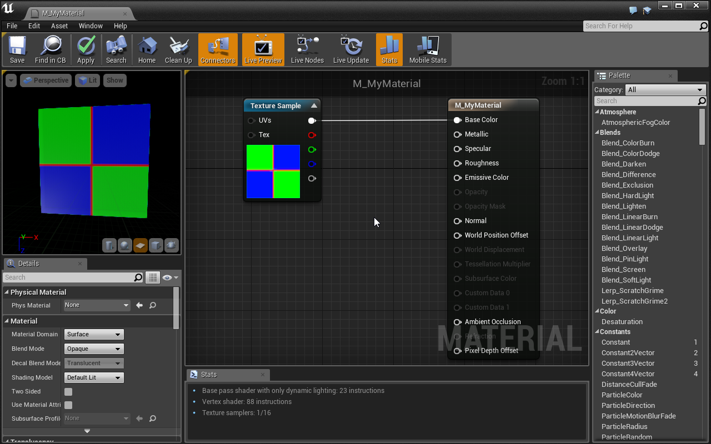
Now you can see our material use the texture’s colors as its Base Color.
Okay. It’s time to talk about what is really going on here.
A Material is a series of math equations that are run once per pixel. In graphics, these are referred to as fragment shaders. GPUs have been designed to run these equations extremely fast, allowing us to program complex behavior in our graphics.
Some inputs of the Material Node are only run once per vertex (vertex shader), namely the World Position Offset which is used to offset the mesh vertex location.
Once you understand that this material equation will run for every pixel it is rendered on, a whole world of opportunity opens. Let’s take a quick detour to demo this:
Every pixel has data that we can access in our material. For example, we can get the pixel’s WorldPosition, ScreenPosition, Normal, and much more. Let’s use the pixel’s ScreenPosition to demonstrate the power of fragment shaders.
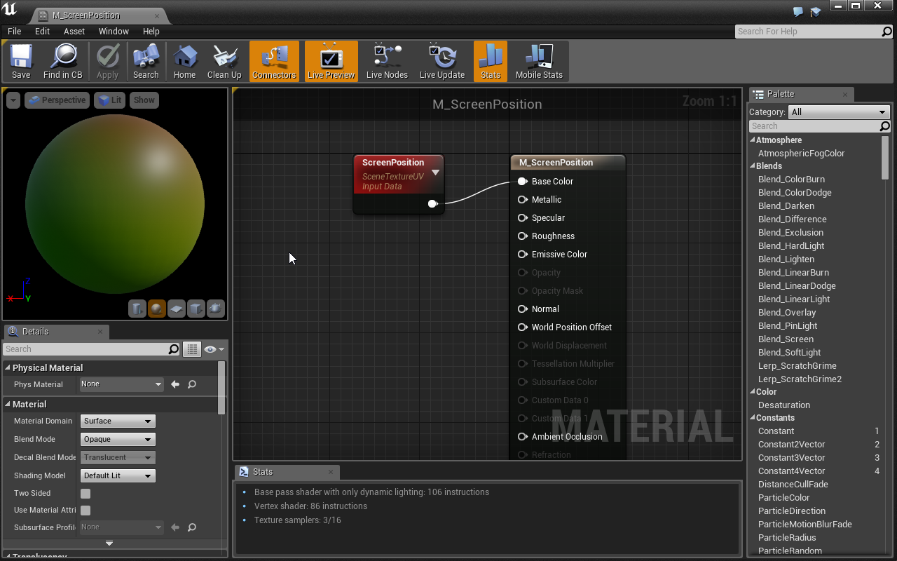
The ScreenPosition node holds a 2Vector of the pixel’s location on the screen. The position is stored relative to screen size with values between 0 and 1. A pixel in the upper-left corner is at [0, 0], a pixel in the center is at [0.5, 0.5], and a pixel in the lower right is at [1, 1].
Our material is using these X/Y values as Red/Green values and creating a color based on them. Let’s see what it looks like in the world.
Now test it out in the Level Editor! Each of the cube’s pixels are colored based on where they are on the screen.
Great! Now we see that each pixel has unique data that we can use to change its color.
If you want to play with this more, try using the WorldPosition or PixelNormal data in the material.
Let’s get back to Textures and M_MyMaterial.
Another great piece of data that comes with each pixel is its Texture Coordinate. This works similar to the ScreenPosition, but instead it’s like MeshPosition. Let’s demo this:
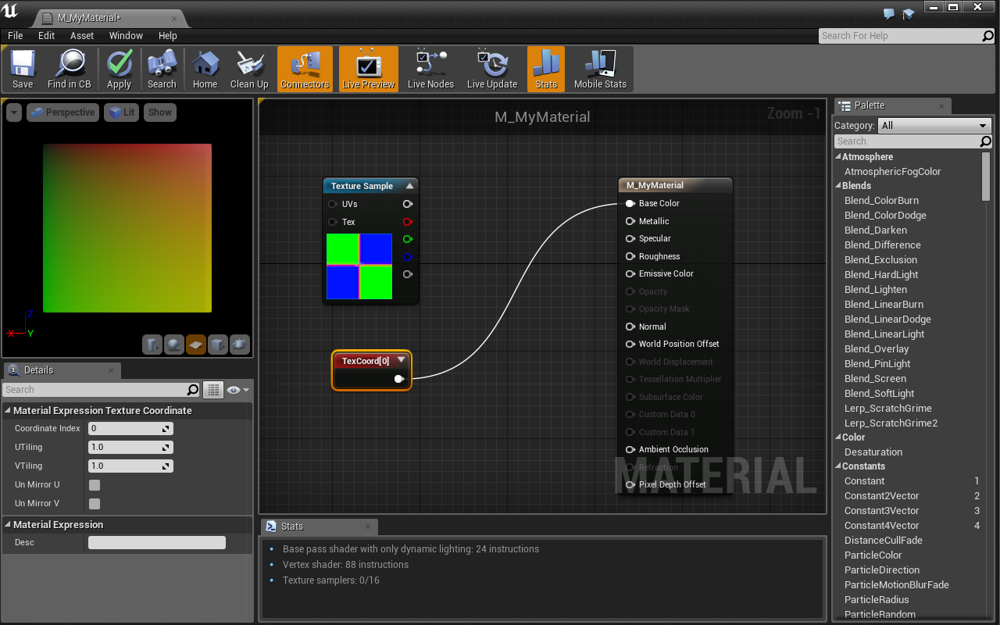
As you can see in the preview, the TextureCoordinate holds a 2Vector (similar to ScreenPosition) which displays the pixel’s coordinate relative to the mesh. For our plane, a pixel in the upper-left corner is at [0, 0], a pixel in the center is at [0.5, 0.5], and a pixel in the lower right is at [1, 1].
A pixel’s Texture Coordinate is defined by the UV map of a mesh in a 3D modeling program. Essentially, a UV map is all the faces of a mesh laid flat on an coordinate system that spans from 0 to 1 in two dimensions. This is how we map flat textures to complex 3D shapes.
Textures use Texture Coordinates in order to output a different color per pixel. If the pixel is at texture coordinate [0.1, 0.4], the TextureSample grabs the color of the texture at location [0.1, 0.4] (relative to the texture’s size).
This is why it is important that all textures you use are square. Additionally, your texture size should be a power of two: 256, 512, 1024, 2048 etc…
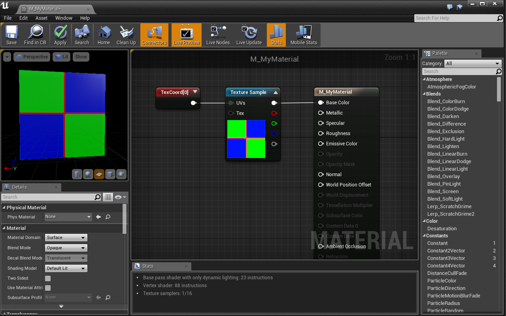
We’re back to normal. Using the TexCoord input didn’t change anything because a TextureSample uses a hidden TexCoord by default. Let’s change our TexCoord to tile our texture:
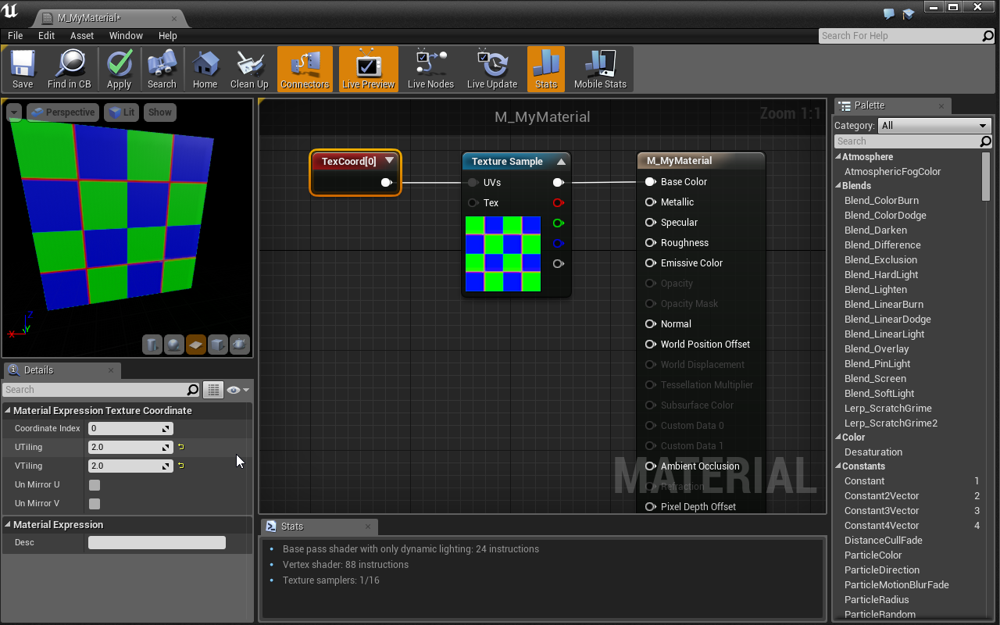
Nicely done! Multiplying a default texture by a [2, 2] 2Vector has the same effect:
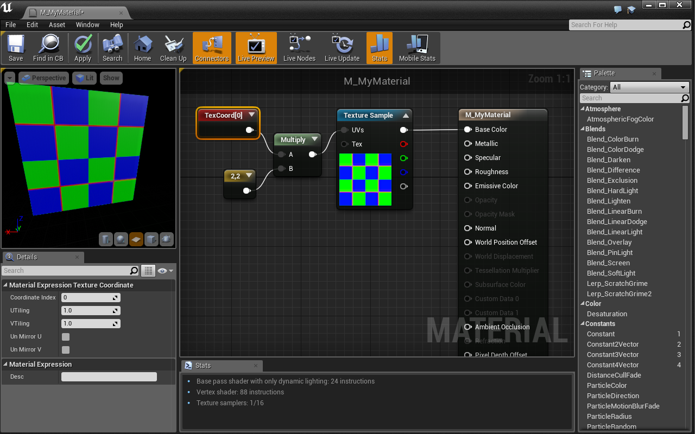
The reason multiplying the TextureCoordinate also tiled our texture is because our TextureSample is set to wrap. This means that an input of [1.1, 1.4] is the same as an input of [0.1, 0.4]. We could set our TextureSample to not wrap by changing its Sampler Source in the details panel.
Great stuff! Let’s use this texture as a mask to take more control of our material.
Masking allows us to change colors and effects on only part of a material. Textures allow us to target specific parts of a mesh we want to change. The texture we’re using right now is actually meant to be used as a mask. Each color channel represents a different black/white mask. Let’s demo this to learn more:
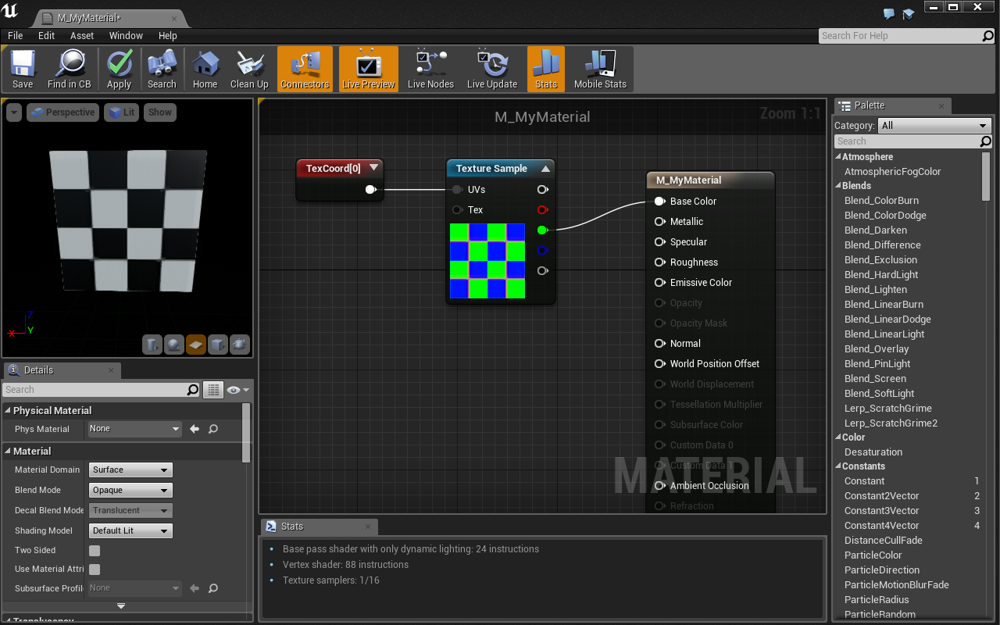
By isolating the Green channel of our Texture, we have a black and white mask for all the green sections of our texture. Now we can customize that to be any color we want:
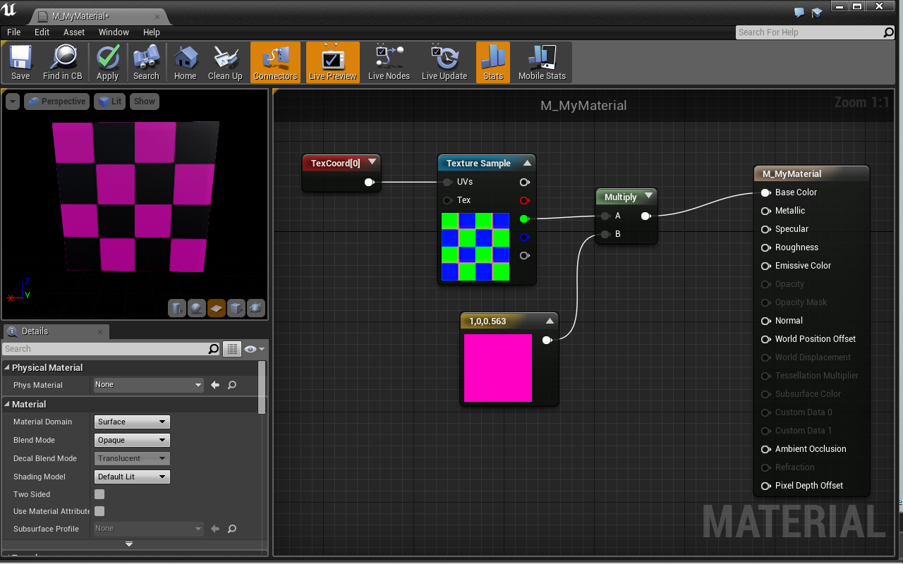
Woah, cool! Now we have complete control of the checker boxes that are white on the Green channel. This works because we are either multiplying our color by 1 (white) or 0 (black). This is the power of masking.
Challenge:
Let’s take control of the other set of checker boxes. The mask you need is in the Blue channel of the TextureSample. Do the same thing you did for the Green channel with a new color.
Combine the two checker sets together by adding them together using an Add node before inputing into BaseColor.
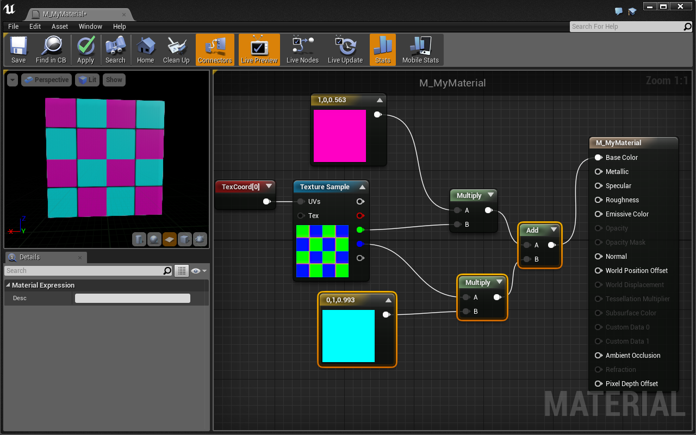
The Material Editor has some great tools to help you as you develop complex materials. Namely, you can preview each node individually, allowing you to see what your material would look like if you plugged that node right into Base Color. There are two ways to do this:
Preview Node In Graph
To preview a node in the graph, click the small triangle in the upper right corner of any material node:
Preview Node In Preview Window
To preview a node in the preview window, right click on the node and select Start Previewing Node
These methods of previewing allow us to visualize and understand what is happening with each math node.
Coolio! Let’s use the final Red channel to mask out an emissive color.
So far we’ve only worked with the BaseColor input of our material. Now we’re going to use the EmissiveColor input.
Emissive Colors supply their own light. This means that light has no effect on their appearance and they’ll still be visible in a completely unlit room. Emissive Colors are also a great way to take advantage of UE4’s bloom effect. Let’s get cracking!
Challenge:
Use the Red channel of our TextureSample to make a mask for the material’s EmissiveColor input.
Make sure to multiply the mask by a color before inputing it to EmissiveColor
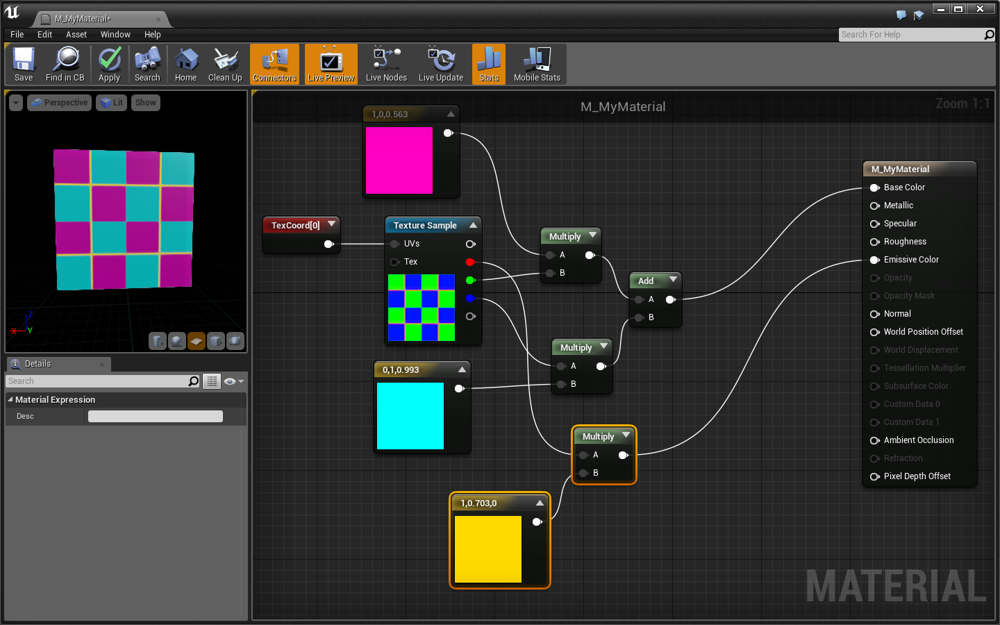
In order to make our emissive lines glow using UE4’s bloom, we need to push the color values beyond 1.
Challenge:
Multiply the emissive color by 20 before inputing it into EmissiveColor.
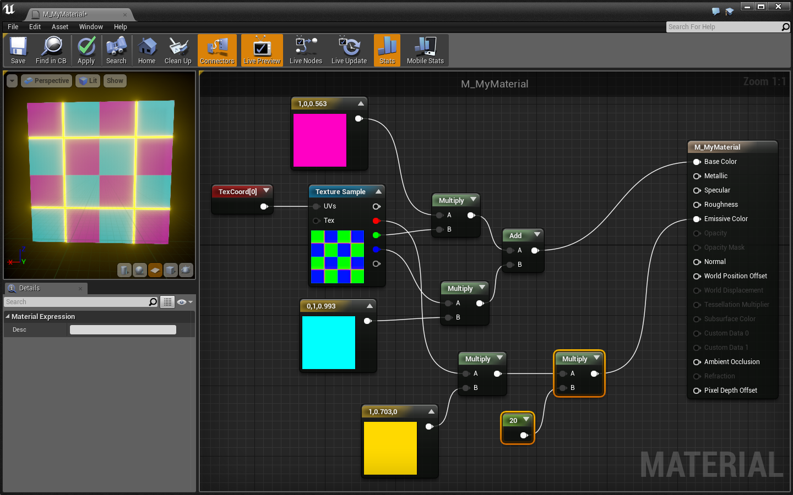
Nice, now that line is really glowing! 20 might be a little high in practice, but it demonstrates how to utilize UE4’s bloom effect.
The final thing we’re going to do is add a normal map to our material.
Normal maps are a type of texture that define a pixel’s normal at a specified location. A “normal” is a vector that points in a direction perpendicular to the face. Engines like UE4 use the normal data to affect lighting and shadowing, giving flat objects the appearance of depth.
One thing to note, normal maps are not as effective in VR as they are in monoscopic experiences. The reason is that in VR, we can truly see 3D depth. In this way, even if the lighting suggests that a flat plane is actually a jagged stone wall, when we get close we’ll see that there is no depth at all.
We have a normal map texture that is made for this material:
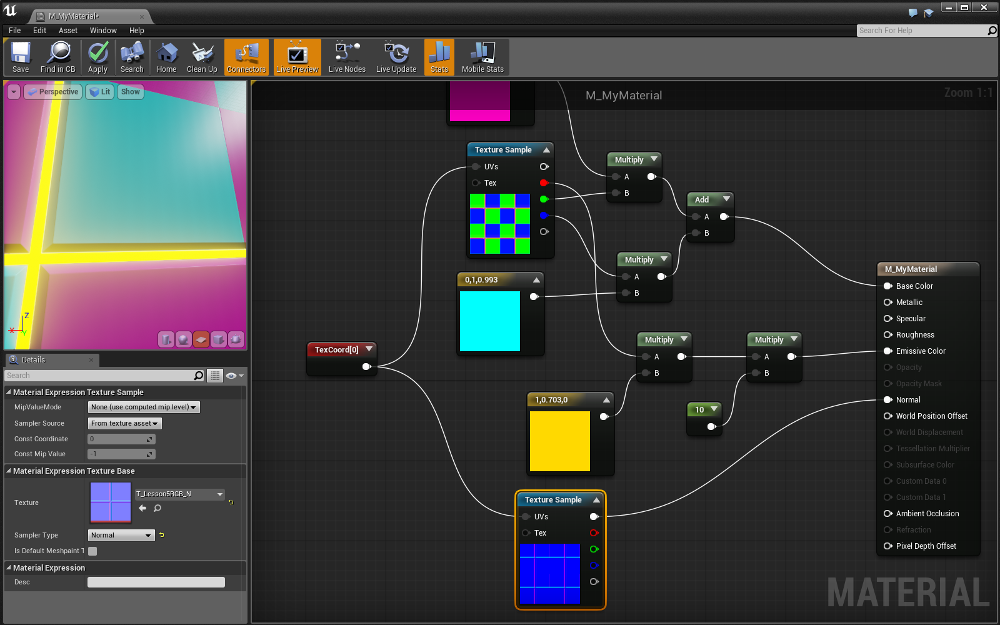
You can see that there is now the appearance of a slight bevel from the checkerboard pattern into the emissive line. You may have to turn down the bloom to see it clearly.
Great stuff! We’re done with our material. Now we’re going to talk about using material parameters.
Right now, our material is completely set in stone. There is no way for us to easily change the color of our checkerboard or glowing line without editing the material itself. This is because all of the values in the material (like color and brightness) are set with constants rather than parameters. Let’s change that.
First, let’s change the colors of the checkerboard to parameters:
Excellent! Let’s convert two more constants:
Wonderful! Now we can use these parameters to easily make new, unique versions of this material. We do that with Material Instances.
We discussed Material Instances in Lesson 1, but now we have a new understanding of what is going on. Let’s make some new materials!
Now that you’re in the Material Instance Editor, you can see all the parameters we created! From here, we can easily change our parameters to create unique versions of the material.
To change a parameter:
Yay! Now that you know all about materials and what a material instance really is, you can start to dig into Layout’s Base Materials. They provide a ton of parameters that allow you to make almost anything you want!
Parameters in our materials are extremely powerful. Not only do they allow us to make many unique versions of the same material, they can also be changed in real time using code!
Let’s create a cube that uses a dynamic version of our texture to cycle the LineColor parameter through a series of colors.
Here’s what a final version looks like:
In order to dynamically change the cube’s color, we must first create a dynamic version of its material and save it as a variable:
We’ll store our dynamic material in this variable. Let’s set it in the construction script:
The Create Dynamic Material Instance node takes a static mesh as input, creates a dynamic version of its current material, then sets the mesh’s material to the new dynamic version. We have to store the output so we can update the dynamic material at some point in the future.
Let’s update the LineColor parameter using a timeline in the Event Graph
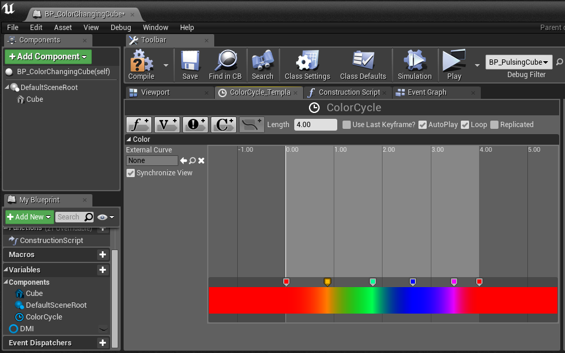
We now have a timeline that automatically starts and loops through a series of colors indefinitely. Let’s use it to update our material:
Go ahead and test it out! Ooohh
Well done! You’re on your way to becoming a material master!
What you just learned about materials is extremely powerful. You can now isolate parts of meshes using masks, make your material glow, and add detail with normal maps. You may be happy to find out that we’ve truly just scratched the surface of what can be done with materials.
If you’re interested in learning more, a great place to start is UE4’s Content Examples. Go to the Learn tab of your Epic Games Launcher. There you should be able to download the Content Examples project. This project is a huge resource of examples, and is supported by the corresponding documentation.